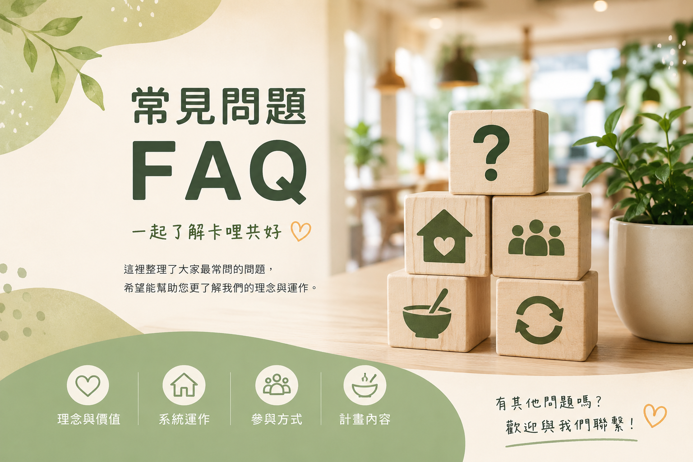

如果你第一次認識卡哩共好， 可以從這裡開始。

我們尊重公益價值，但更希望建立一套可循環、 可持續運作的共享模式與支持系統。
不是。咖哩餐盒只是入口， 真正核心是一套共享型生活中轉系統。
因為咖哩容易標準化、穩定供應、 易於培訓與複製。
提供過渡環境與重新開始的機會， 協助建立工作節奏與生活秩序。
中轉站除了工作本身， 更重視適應、陪伴、訓練與重新連結。
我們希望建立長期循環系統， 而不是只提供一次性的幫助。
因為早餐店通常具備閒置時段、 設備與在地社區連結。
了解理念、分享理念、 成為合作夥伴或參與社區循環。
包含共享據點、共用廚房、 配送網絡與中轉人才網絡等方向。
如果 FAQ 沒有回答你的問題， 歡迎直接與我們聯絡。